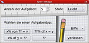
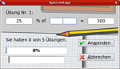
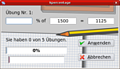

KPercentage
Archivierte Anleitung
Dieser Artikel wurde archiviert, da er - oder Teile daraus - nur noch unter einer älteren Ubuntu-Version nutzbar ist. Diese Anleitung wird vom Wiki-Team weder auf Richtigkeit überprüft noch anderweitig gepflegt. Zusätzlich wurde der Artikel für weitere Änderungen gesperrt.
Zum Verständnis dieses Artikels sind folgende Seiten hilfreich:
Hinweis:
Ab Jaunty Jackalope ist diese Anwendung nicht mehr verfügbar. Mit KBruch steht aber eine Alternative zur Verfügung.
Kpercentage  ist ein einfaches Lernprogramm, mit dem die Prozentrechnung in drei verschiedenen Aufgabenarten und drei Schwierigkeitsstufen geübt werden kann.
ist ein einfaches Lernprogramm, mit dem die Prozentrechnung in drei verschiedenen Aufgabenarten und drei Schwierigkeitsstufen geübt werden kann.
Installation¶
Bei Edubuntu ist KPercentage normalerweise bereits in der Grundinstallation enthalten. Möchte man das Programm nachinstallieren [1], muss man das folgende Paket auswählen:
kpercentage
 mit apturl
mit apturl
Paketliste zum Kopieren:
sudo apt-get install kpercentage
sudo aptitude install kpercentage
Hinweis:
Da es sich bei KPercentage um eine KDE-Anwendung handelt, werden unter X|Ubuntu eine ganze Reihe von zusätzlich benötigten Paketen mit installiert.
Nach der Installation findet man KPercentage unter:
"Anwendungen -> Bildung -> KPercentage"
|  |
|  |
|  |
Bedienung¶
Voreinstellung¶
In den beiden oberen Eingabefeldern werden die Anzahl der Aufgaben und der Schwierigkeitsgrad eingestellt. Mit den vier Buttons im unteren linken Bereich wird eine der drei Aufgabenarten oder der Zufallsmodus gestartet.
Rechenaufgaben¶
Das Programm ist leicht zu bedienen. Nachdem in das dafür vorgesehene Feld ein Wert eingetragen und der Button "Anwenden" betätigt worden ist, zeigt eine kleine Animation an, ob die Aufgabe richtig gelöst wurde. Leider wird bei einer falschen Antwort die Frage unendlich lange wiederholt, ohne einen Hinweis auf die richtige Antwort zu geben. Die einzige Möglichkeit dies zu beenden besteht darin, auf den Button "Abbrechen" zu klicken. Bei einer richtigen Antwort schreitet der Fortschrittsbalken, ebenfalls in Form einer kleinen Animation, weiter voran.
- Erstellt mit Inyoka
-
 2004 – 2017 ubuntuusers.de • Einige Rechte vorbehalten
2004 – 2017 ubuntuusers.de • Einige Rechte vorbehalten
Lizenz • Kontakt • Datenschutz • Impressum • Serverstatus -
Serverhousing gespendet von